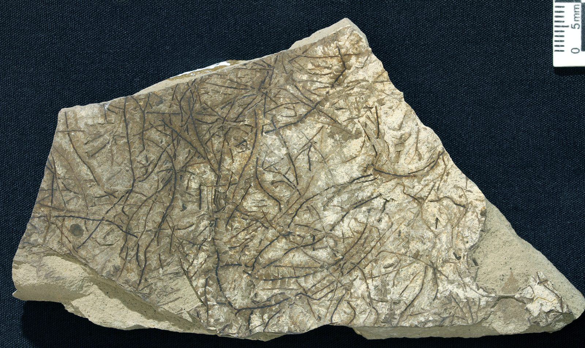
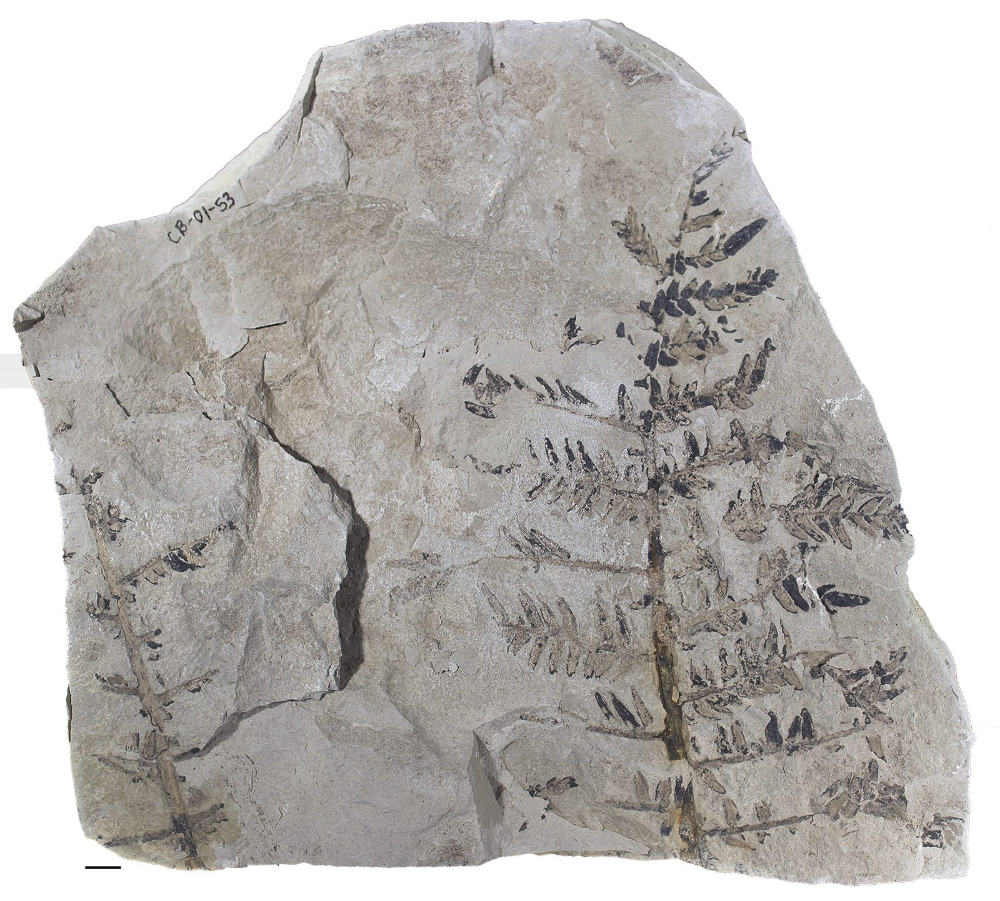
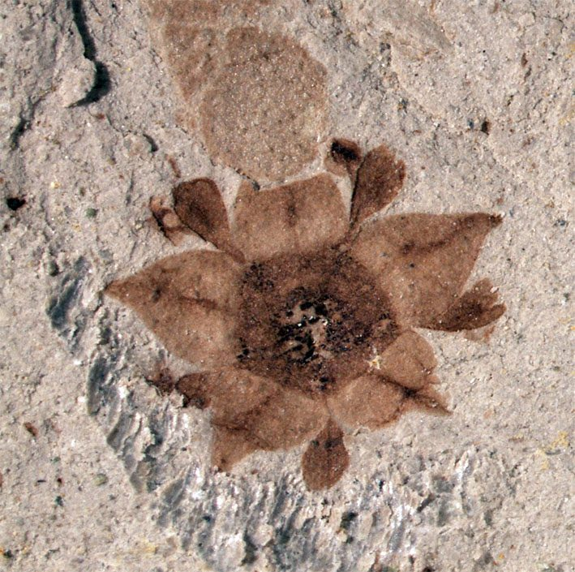
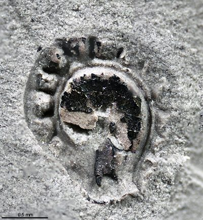
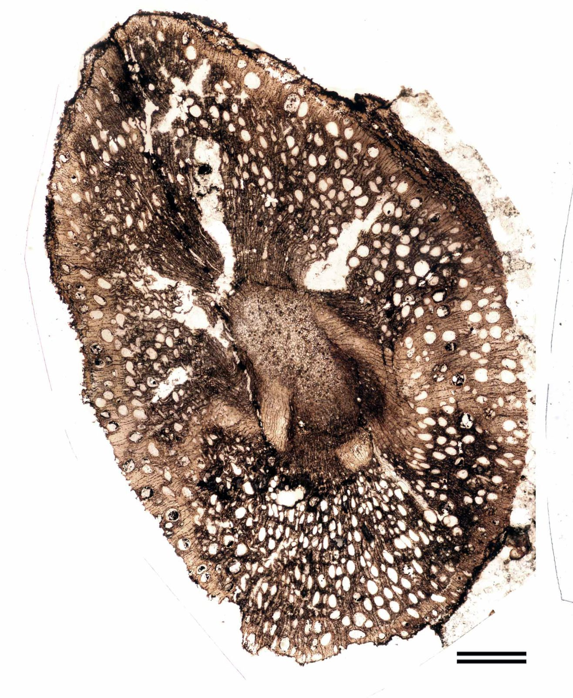
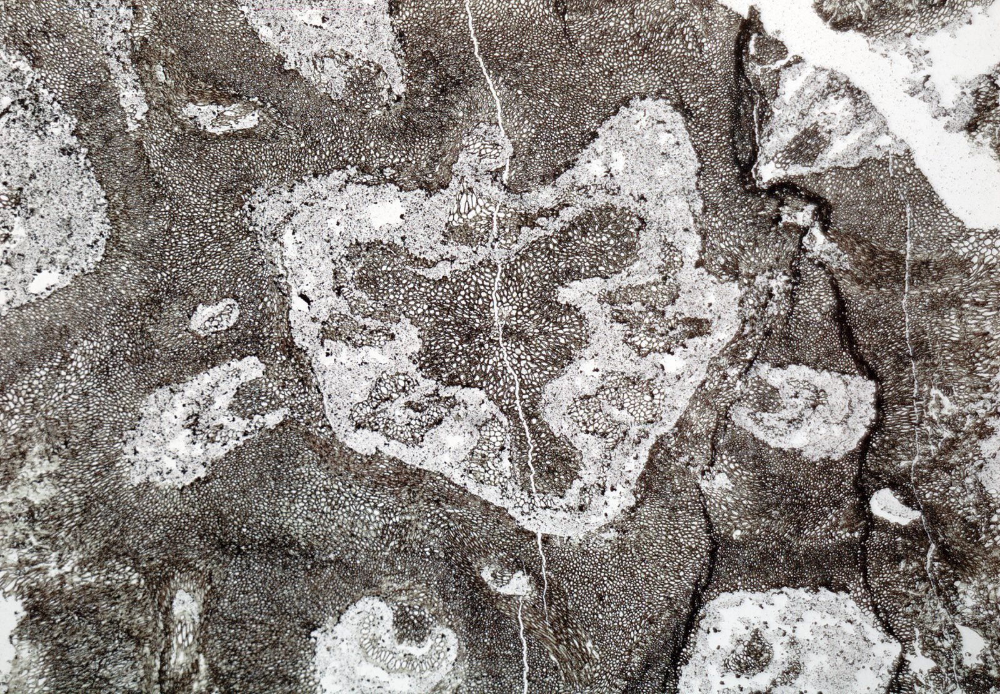
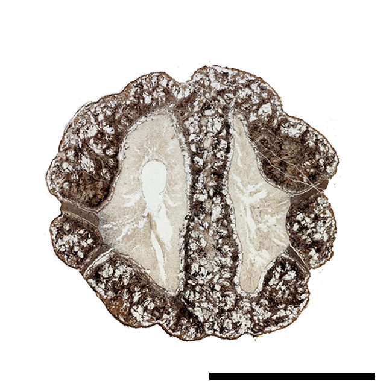
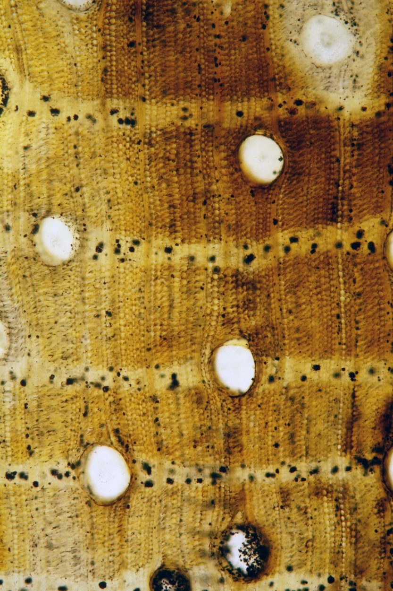

Welcome
I study living and fossil plants to understand the history of plant evolution and ecology. My focus is paleobotany, because the fossil record is a rich source of data on the morphology, anatomy, distribution, and associations of extinct plants. These data can be used to test a variety of hypotheses in ecology and evolution.
My primary interest is understanding how diversification and extinction change plant communities in deep time. I study the evolution of plant form and diversity through specimen-based work in plant systematics, and patterns of community structure and environmental change through field-based paleobotanical studies of plant diversity and distribution.
Research projects are available for undergraduate students on a range of topics in organismal botany, paleontology, and (paleo)ecology. Students in the lab take on specimen-based projects of their own, and several have gone on to co-author published papers. If you are a student interested in this kind of work, please get in touch.
Explore
Research
Cretaceous flowering plants, fossil woods and ancient forests, Patagonia, Panama.
Publications
Peer-reviewed papers, with links to the published articles and PDFs.
People
Current students, lab alumni, and their research projects.
Teaching
Courses, undergraduate mentorship, and public science education.
Recent work
N.A. Jud, G.C. Nunes, P. Wilf, and M.A. Gandolfo. 2026. Early Eocene leafy liverworts from West Gondwana. The Bryologist 129(3): 206–219.
N.A. Jud, S.G. Lucas, and W.A. DiMichele. 2026. Late Desmoinesian plants from the Valley Ranch section, upper Alamitos Formation, New Mexico: New insights into tropical western Pangean vegetation. Review of Palaeobotany and Palynology 355: 105709.
E.A. Wilson*, C. Burch*, M. Schorr, and N.A. Jud. 2025. Revision of Neuralethopteris lindahlii White, an unusual medullosan foliage fossil from the Upper Pennsylvanian in Missouri. International Journal of Plant Sciences 186(3): 167–177.
From the collection







